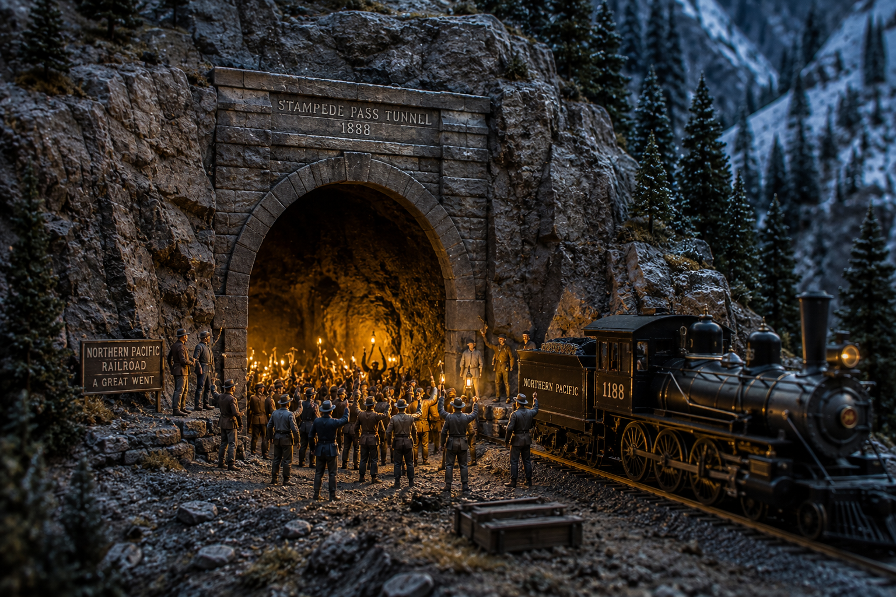

Stampede Pass: The $1,000 Race Through the Mountain

Nelson Bennett stood at the west portal of his mountain tunnel on the afternoon of May 3, 1888, waiting for something that had seemed impossible just 28 months earlier. A contractor with railroad ambitions and the stamina to match them, Bennett had staked his reputation on punching a hole through the Cascade Range—a 1.86-mile bore that would replace one of the most treacherous stretches of track ever built. Behind him, 150 workers from the western slope had been drilling and dynamiting their way through solid rock at a pace of 11 to 12 feet a day. Ahead of him, somewhere on the other side of the mountain, another 150 men were doing the same from the eastern side. Today, shortly after noon, those two crews would finally meet. And someone was going to win $1,000 to be the first man through.
The problem Bennett's tunnel was meant to solve was as dangerous as it was ridiculous. The Northern Pacific had recently completed a railroad line across Washington Territory, but it had done so with a temporary fix that nobody involved actually believed in: the Stampede Pass Switchback. This wasn't some gentle back-and-forth through the foothills. This was a freak of engineering desperation—three switchbacks on each slope, grades climbing as steep as 5.6 percent, enough to make even experienced railroad men white-knuckled. Trains could only haul five cars at a time. Brakemen didn't ride in cabs or cabooses; they rode on the rooftops of the cars themselves, standing in the wind and snow, working the brakes by hand. The first experimental train had crossed that switchback on June 6, 1887, and the railroad company knew immediately it was a temporary solution to a permanent problem.
When Engineering Became Desperation
The switchback was, by any honest assessment, terrifying. Each train required two of the largest steam locomotives in the world—one pushing from the rear, one pulling from the front—just to move five cars up those 5.6-percent grades. The journey through the switchback was eight miles long and took an hour and fifteen minutes. Trains had to stop at each switchback, reverse direction, and then climb again at a different angle. The whole arrangement felt like something designed by a man who had never actually looked at a mountain.
So the Northern Pacific made the call, and Nelson Bennett and his brother Sidney took the contract. Sidney would oversee the eastern push from the Kittitas Valley. Nelson would manage the western approach. They brought in more than 300 workers total and set them to work with steam drills and dynamite, chipping through solid Cascade granite at 11 to 12 feet per day. The bore had to be accurate. Miss by more than a small margin and the two tunnels might not meet at all—or might meet at an ugly angle requiring weeks of additional blasting to correct.
The railroad had gambled everything on two tunnels meeting in the dark, each crew working blind from opposite sides of a mountain, dependent entirely on mathematics and the nerve to keep drilling.
By early May 1888, the two crews were close enough to hear each other's blasts through the rock. The contractors offered a $1,000 prize to the first man physically through the breakthrough. What happened next is the kind of story that gets better every time it's told.
Battered, Bleeding, and $1,000 Richer
When the final barrier between the two bore holes collapsed on May 3, 1888, shortly after noon, the workers did not celebrate. They threw themselves at each other. The men from the western crew and the men from the eastern crew both wanted that money, and they scrambled through the dust and falling rock toward the opening like it was a finish line. In the chaos of the breakthrough, two men arrived at the gap at almost exactly the same moment. They collided in the darkness—literally butted heads in the narrow, newly-opened bore.
When the dust settled, the man from the western crew was declared the winner. He was battered and bleeding from the impact, but he'd made it through first. His crew, already celebrating, received a steak dinner and a generous portion of whiskey to go along with their leader's $1,000. The tunnel itself had held up beautifully—the two bores met with remarkable precision, the deviation between the eastern and western approaches small enough to make any engineer proud.
The official opening came on May 27, 1888, three and a half weeks after the breakthrough. Before the first train passed through, Mrs. Bennett—the contractor's wife—made her own history by becoming the first woman to walk the full 1.86 miles through the completed tunnel. She traversed 9,844 feet of carved mountain, from one side of the Cascades to the other, through a passage that men had bled for. That seems like the right way to inaugurate a tunnel: not with a ceremony, but with a walk.
A Tunnel That Changed a Region
The Stampede Pass Tunnel was not the longest tunnel in America in 1888. It was not even the longest in Washington. But it was the one that mattered, because it removed the last serious barrier between the Puget Sound ports and the rest of the country. The moment that tunnel opened for through traffic, Seattle and Tacoma became legitimate competitors for commercial dominance of the Pacific Northwest. Goods that had staggered through those terrifying switchbacks—hauled by two locomotives, five cars at a time, with men riding rooftops in mountain storms—could now move reliably through the mountain. The switchback was dismantled. The brakemen came down from the rooftops. The era of engineering desperation was over.
Nelson Bennett's gamble had paid off. Two crews, attacking a mountain from opposite sides, had met within a few feet of where mathematics said they should. A battered, bleeding worker had won a $1,000 prize for being the first through a hole in a mountain. And the Pacific Northwest had its future delivered to it in the form of 9,844 feet of tunnel carved through the Cascades by 300 men over 28 months, one foot at a time.
The tunnel still carries freight trains today—Burlington Northern Santa Fe runs through a later, longer Stampede Pass tunnel nearby—and if you drive out to the original portal site and look up at those mountains, it's almost impossible to imagine anyone building what Nelson Bennett built with the tools he had. But he did. He simply refused to stop drilling until the two ends met.
Sources & Further Reading:
- Stampede Pass tunnel opens on May 27, 1888 - HistoryLink.org
- Stampede Pass - Wikipedia
- Today in Transportation History: The Stampede Was On - Transportation History
- Pacific Northwest Chapter, National Railway Historical Society
Written by Kevin Sotka for meatbagmade.com. Got a favorite railroad story? Drop me a line at meatbagmade@gmail.com or find me on X/Twitter at @TrainDewd. Subscribe to the newsletter on Substack for more Pacific Northwest railroad history.